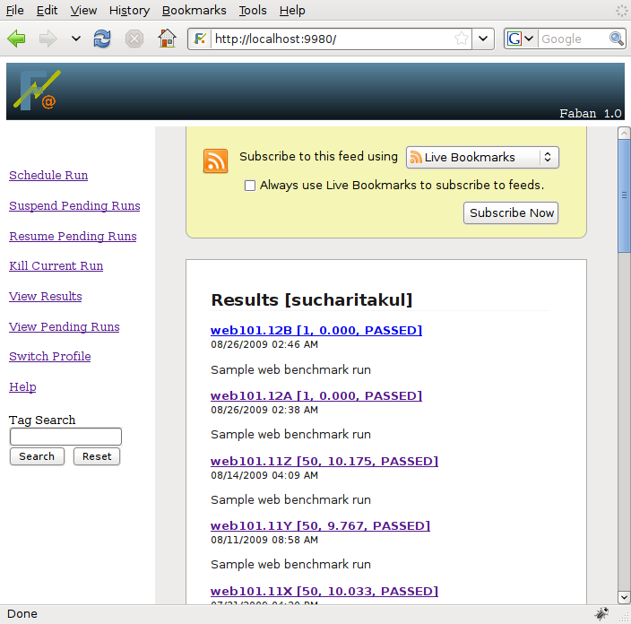
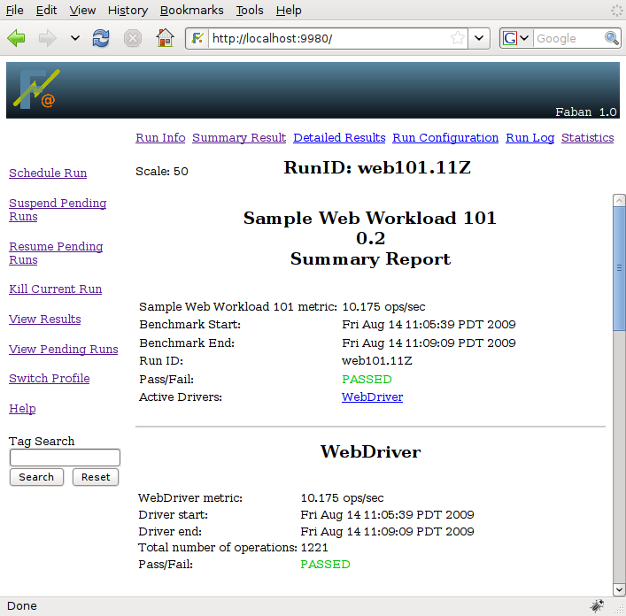
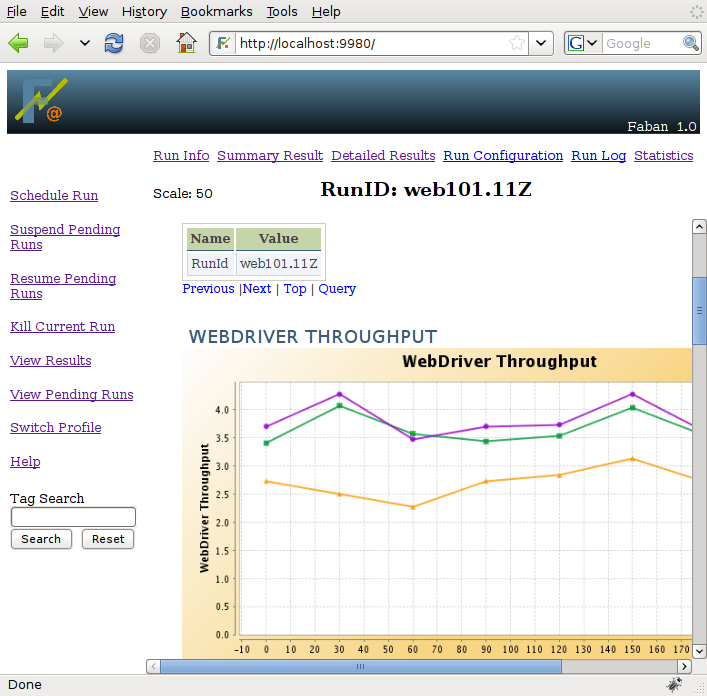
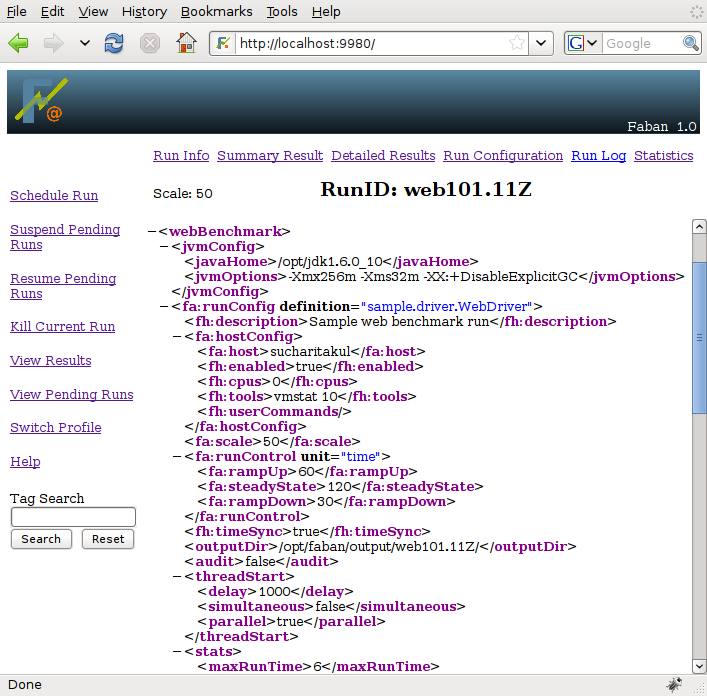
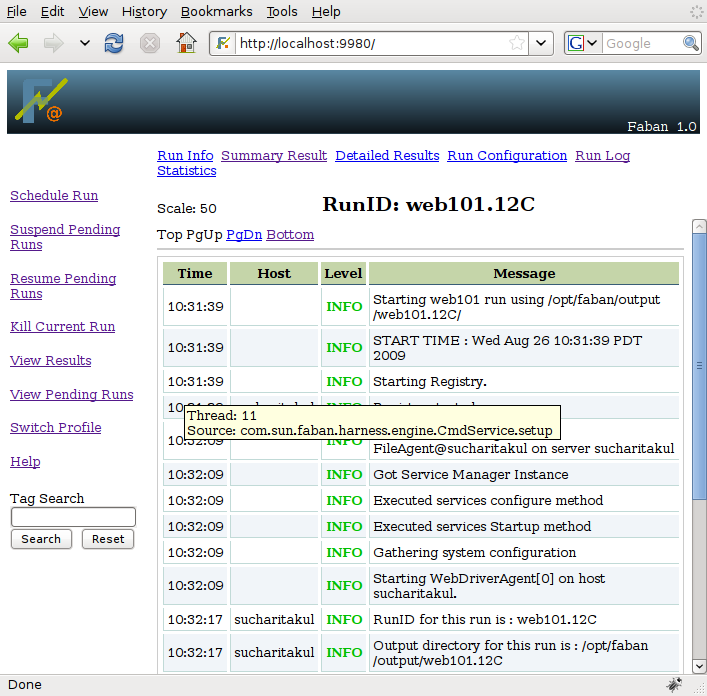
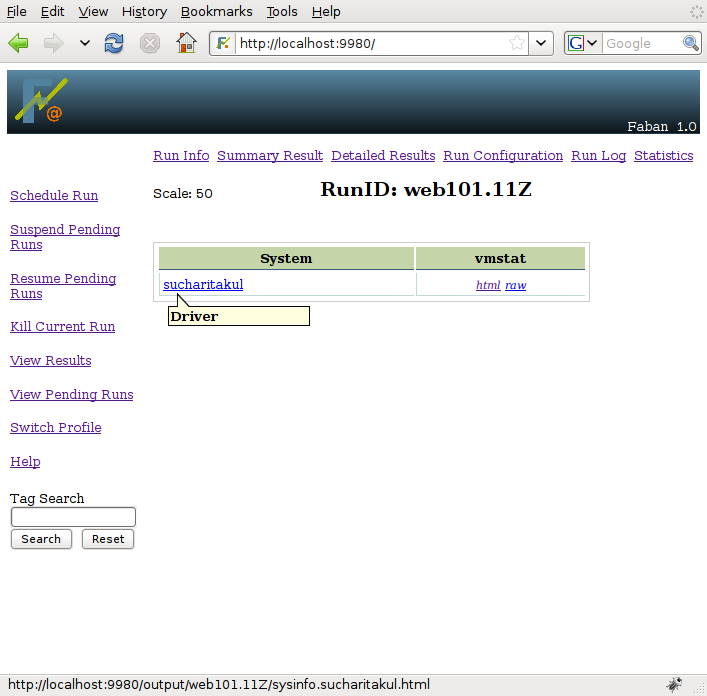

To view the results, click on View Results from the menu on
the left
of the page. A page such as the following will be shown:
As soon as a run is started, it will show up on the results
list
with a status of STARTED.
The
current run is usually showed on top of the list, followed by
the most recently finished runs. The runs are ordered by run id and/or
run date, in
descending order by default. This means the most recent run is shown
first and the
oldest run is shown last. All the columns are sortable. You can choose
to sort based on your need.
The columns shown in the result list are the description,
whether
the run passed all criteria or not, the scale of the run (the user
setting of the load) and the metric (final run result), the run status,
and the date and time the run was last updated. It may also show the
user who submitted the run, if security of the Faban harness is
enabled. Please see the Faban Harness
Administrator's Guide
for information on Faban harness security. The last update time means
the start
time for a current run and the end time for a run that has already
finished. Clicking on icons in the Result field takes you to the
summary report or run logs based on the status of the run. The Tags
field displays the tags associated with this run. The set of tags may
be too long for the table display, in which case the complete list will
be shown on mouseover. Upon selecting a run result by clicking on the
icon, the
result navigator menu will show up to allow you to drill in to the run
results.
In addition, if you click on the feed icon on the right top corner, it
will take you to the feed page where you can subscribe to the feeds by
hitting on the "Subscribe Now" button.

As you select a run to view it's results or logs by either
clicking
the icons in the Result field, the result navigator menu will show up
on top of individual run results.
The result navigator menu allows you to drill into the details of each
run. The summary report and
detail report are not available for runs in progress. The corresponding
links
are disabled. But the run configuration, the logs, and some statistics
will always be available almost immediately after the run starts.
The RunInfo page lists the details for each run. Description
and
Tags field on this
page may be editable if you have the right permission. Clicking on the
text will open an editable field.
Just modify the text and hit "Save" button. Or if you decide not to
modify,
then just hit "Cancel" button.
The summary report shows the final results of a run.
It will clearly report the obtained metrics and a lot of the run
statistics. If there are failures, the summary report also identifies
the failures that have happened. The standard Faban summary report
shows you
the operation counts, sucesses, failures, mixes, response
time, and cycle time statistics. It may also show benchmark-specific
custom metrics if exposed by the benchmark developer.

The detail report shows some detail statistics that cannot be
represented by simple aggregated numbers as shown in the summary
report. The standard detailed statistics page shows graphs of
throughput and response times over time. It also shows distribution
histograms of cycle times and response
times which allows you to understand the characteristics much better
than reading single number results in the summary report.

The run configuration shows
the
configuration files as it was submitted. While the submission is done
using an easy-to-use form, the configuration file is shown as
non-formatted XML allowing you to investigate the detail of the
submission with ease.

The run logs show you what has happened or is happening in the
run.
The log server accumulates the logs from all the systems partaking in
the run and presents a unified view of the logs. Such a unified view of
the logs is also extremely interesting as it interposes the events that
happen on each system allowing easier pinpointing of problems as they
occur. Mouseover of the message field shows you the the thread id and
the source of this message.

The statistics screen shows both system configuration information and statistics as soon as they occur. The Faban harness tools subsystem collects statistics on all the systems partaking in the run as specified in the run configuration and transfers them to the master shown through the statistics screen. The system configuration information and the statistics are shown in a system-dependent manner. If any of the statistics can be postprocessed into a graphical form, Faban will call the post-processor on such data directly.

The first link shown for all systems is the system name, which links to its information and configuration, followed by the statistics produced by tools, ordered aphabetically by tool name. Each system is represented on each row and the systems are ordered by their role in the benchmark, according to the order of the roles in the benchmark configuration file. The driver systems are always listed last. This allows two rigs with different system names to have the same ordering.Holding the mouse over the system name also shows a tool-tip explaining the roles of that system and the network interfaces or alias names used for those roles.
All statistics provide text
results, some results compatible with the postprocessor are also shown
in html. The Faban harness calls FenXi, our postprocessing
tool,
to do such
postprocessing and graphing. For such statistics, both text and html
results will be available.
In certain cases, you'll want to clear up run results that are
no
longer needed. Not only do these results clutter up your result list.
In some cases they also use up a lot of storage space. Removing run
results is one of the few functions that are not provided through a
GUI.
Still, it is easy to remove a Faban result. Login to the
master
system and just simply remove the directory containing the result under
FABAN_HOME/output.
For
example, the following command shows an example
removing the web101.1A
run
result:
$ rm -rf $FABAN_HOME/output/web101.1A